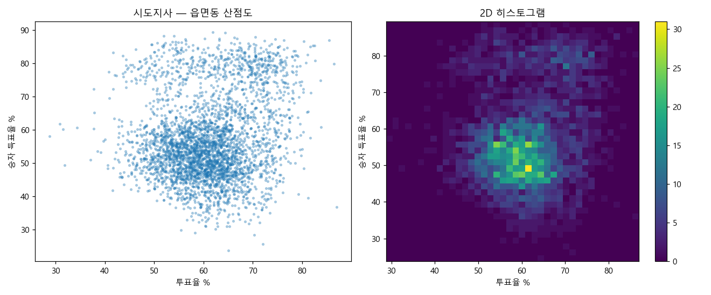
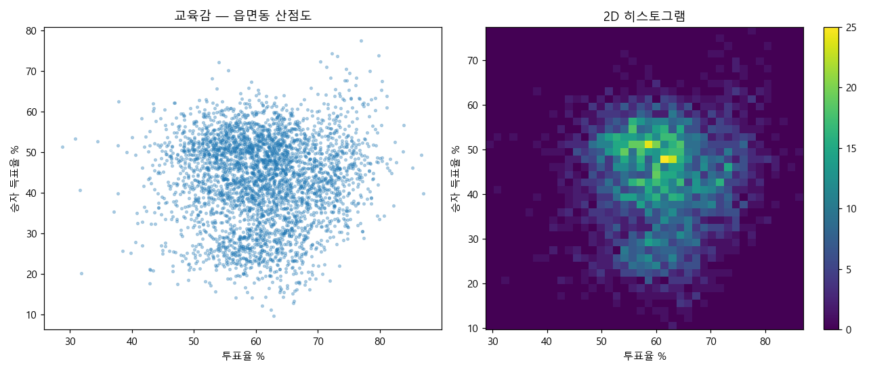
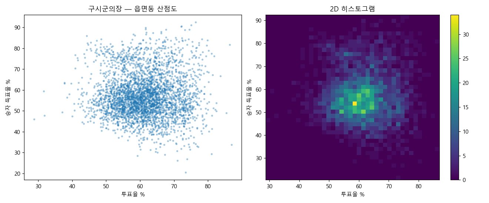
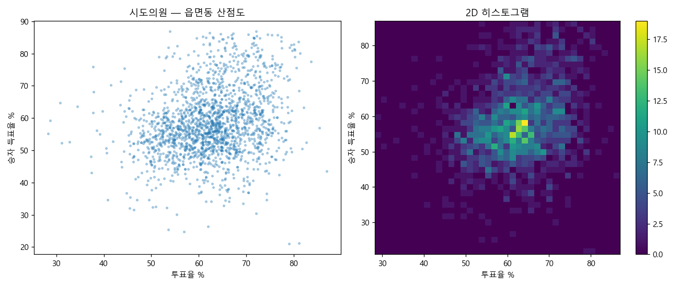
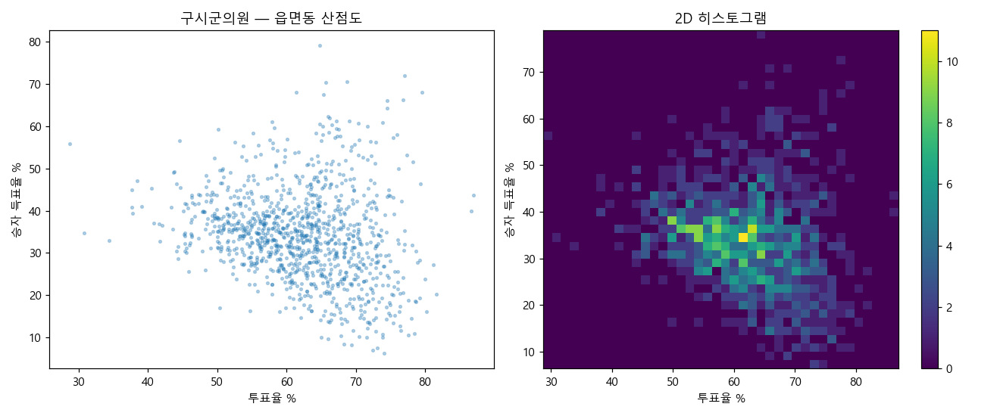
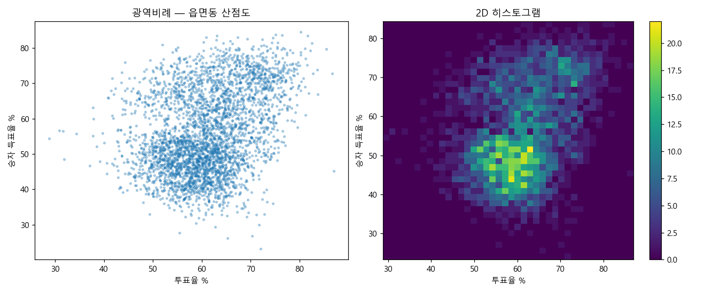
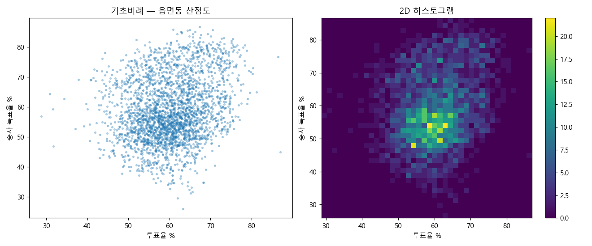

Bottom line
약 1,245개 선거단위 중 대부분 PASS(우연 모델로 설명되는 범위), 3개 FLAG(우연 모델의 기대치를 통계적으로 초과 → 더 볼 지점)입니다. FLAG도 PASS도 그 자체로 부정·결백의 증명이 아닙니다. 이 페이지는 "조작이 있다/없다"가 아니라 "어디가 기대치를 넘었는지"의 사실을 보여줍니다 — 해석은 읽는 사람의 몫입니다.
| 선거 | 단위 | T1 동일득표 | T2 사전vs본 | T3 포렌식 | T4 자릿수 |
|---|---|---|---|---|---|
| 시도지사 | 17 | PASS 15 FLAG 2 | PASS 17 | PASS | 약함 |
| 교육감 | 17 | PASS 17 | PASS 17 | PASS | 약함 |
| 구시군의장 | 222 | PASS 222 | PASS 221 | PASS | 약함 |
| 시도의원 | 412 | PASS 412 | PASS 265 | PASS | 약함 |
| 구시군의원 | 392 | PASS 392 | PASS | PASS | 약함 |
| 광역비례 | 17 | PASS 16 FLAG 1 | PASS 17 | PASS | 약함 |
| 기초비례 | 168 | PASS 168 | PASS 167 | PASS | 약함 |
T2·T3는 무투표·소표본 단위 제외 집계. T4(끝자리·벤포드)는 개표 득표수에 원래 잘 안 맞아 거의 항상 형식적 경고 → 참고용(약함).
How it works
교실 23명이면 생일 같은 둘이 있을 확률 50%↑. "똑같은 표가 있다"는 생각보다 자주 일어납니다. 실제 겹친 수를 우연이라면 나올 수와 비교합니다.
모든 동네에서 "사전 = 본 + 일정값"처럼 완벽하면 의심. 정상이면 들쭉날쭉 흩어집니다.
투표함을 채우면 고투표율 동네에서 특정 후보가 치솟는 '혜성 꼬리'가 생깁니다. 정상이면 둥근 구름.
사람이 지어낸 숫자는 끝자리가 고르지 않은 경향. 단 개표수는 원래 잘 안 맞아 거의 항상 경고 → 단독 근거 금지.
"투표지 부족" 투표소가 특정 정당에 유리했는지, 단순 고투표율 탓인지. 공식 부족 목록을 넣으면 작동.
About those flags
| 선거 | 동일(상위2) 쌍 | 기대치 | σ |
|---|---|---|---|
| 전남 시도지사 | 3 | 0.4 | +3.9 |
| 인천 시도지사 | 1 | 0.02 | +7.0 |
| 충북 광역비례 | 1 | 0.09 | +3.0 |
사실: 이 세 선거에서 동일 득표 쌍 수가 단순 우연 모델의 기대치를 통계적으로 유의하게 초과했습니다(그래서 PASS가 아니라 FLAG). 열린 해석: 이것이 다중비교에 따른 우연인지 (약 1,245개를 동시에 보면 +3σ가 몇 건 나오는 게 정상) 다른 원인인지는 이 검정만으로 단정할 수 없습니다. FLAG는 "여기를 더 보라"는 표시이지 결론이 아닙니다. 정상(PASS)을 "은폐"로, 이상치(FLAG)를 "스모킹건"으로 읽는 것 둘 다 데이터가 뒷받침하지 않는 비약입니다.
Full census · 전수조사
개별 제보를 기다리지 않고, 전국 7개 선거 모든 읍면동을 전수조사했습니다. 기준: 같은 선거의 두 읍면동에서 상위 2후보 득표가 동시에 정확히 같고, 1위 득표 ≥ 100표. 제보된 5건(시도지사)보다 많은 8건이 나왔습니다.
| # | 선거 | 두 읍면동 | 동시 일치 값 | 강도 |
|---|---|---|---|---|
| 1 | 인천 시도지사 | 송도1동 · 송도2동 | 박찬대 3030 · 유정복 1440 | +6.3σ |
| 2 | 전남 시도지사 | 북하면 · 엄다면 | 민형배 606 · 이정현 57 | 약 |
| 3 | 전남 시도지사 | 삼일동 · 하의면 | 민형배 506 · 이정현 42 | 약 |
| 4 | 전남 시도지사 | 이양면 · 병영면 | 민형배 444 · 이정현 46 | 약 |
| 5 | 전남 시도지사 | 노동면 · 팔금면 | 민형배 356 · 이정현 42 | 약 |
| 6 | 경남 광역비례 | 중앙동 · 병곡면 | 국민의힘 280 · 민주당 226 | 약 |
| 7 | 경북 교육감 | 월성동 · 지례면 | 임종식 153 · 김상동 110 | 약 |
| 8 | 경북 교육감 | 송라면 · 도개면 | 임종식 140 · 김상동 119 | 약 |
같은 기준으로 전국을 부트스트랩(우연 모델)하면, 이런 쌍은 우연만으로도 ~10건 나오는 게 정상입니다. 실제 8건은 오히려 그보다 적습니다.
| 구분 | 관측 | 우연 기대 | 결과 |
|---|---|---|---|
| 전국 전체 | 8건 | 9.9 ± 3.1 | −0.6σ · 우연 범위 |
| 인천만 | 1건 | 0.02 | +6.3σ · 예외 |
| 인천 제외 | 7건 | 9.9 | −0.9σ · 우연 범위 |
핵심은 몇 곳이냐가 아니라 어떤 값이 겹쳤느냐입니다. 작은 수(2위 42~57표)는 우연히도 쉽게 겹칩니다 — 전남·경남·경북 7건이 그렇고, 그래서 우연 범위입니다. 반면 인천은 박찬대 3030 그리고 유정복 1440 — 큰 수 두 개가 동시에 일치합니다. 이 확률은 극히 낮아 +6.3σ. 비유하면, 두 사람 생일이 같은 건 흔하지만(작은 값) 생일과 전화번호가 동시에 같으면 이상하죠 (큰 값 둘). 인천이 후자입니다.
단, 인천도 결론은 아닙니다. 송도1·2동은 인접 신도시로 유권자 수 (사전 4546 vs 4539)·득표율이 거의 같아, '교환가능' 가정의 단순 null이 과대평가했을 여지가 있습니다. 유사-이웃을 통제한 더 나은 null이 다음 단계 — 그래야 "이상치"인지 "닮은 이웃"인지 갈립니다.
전수조사·유의성 코드: census_duplicates.py ·
census_significance.py (repo 포함, 누구나 재현).
Forensic plots
왼쪽 산점도 / 오른쪽 밀도. 부정선거 신호인 오른쪽 위 '혜성 꼬리'는 어디서도 없습니다.







Direct answers
Q. "화순 이양면·강진 병영면, 민형배 둘 다 444!"
사실입니다. 데이터로 확인됩니다 — 민형배 후보는 2026 전남도지사 후보로, 전남 전역이 한 선거구라 두 곳 모두에 등장합니다. 관내사전투표 민형배 득표가 화순 이양면 444(투표수 578), 강진 병영면 444(투표수 654)로 동일하며, 전남에서 민형배 관내사전이 444인 읍면동은 이 두 곳뿐입니다.
통계적으로: 이 전남 시도지사 race는 T1에서 FLAG됐습니다(상위2 동일 쌍 3개, 기대 0.4, +3.9σ). 단순 우연 모델의 기대치를 유의하게 초과한다는 뜻입니다. 다만 이것이 우연 (다중비교)인지 다른 원인인지는 이 검정만으로 단정할 수 없습니다 — PASS도 조작 증명도 아닌 "추가 확인 필요" 상태입니다.
Q. "송도1·2동, 박찬대 3030 = 유정복 1440 동일!"
사실입니다. 박찬대·유정복 모두 2026 인천시장 후보이고, 송도1동·송도2동 관내사전에서 박찬대 3030, 유정복 1440이 동시에 동일합니다(이기붕만 61/47로 다름). 이건 8건 중에서도 가장 통계적으로 두드러진 사례(+6.3σ) — 위 전수조사 1번입니다.
큰 값 두 개가 동시에 일치하는 건 우연으론 거의 안 나옵니다. 다만 송도1·2동은 인접 신도시라 유권자·득표율이 거의 같아 단순 null이 과대평가했을 여지가 있어, "추가 확인 필요" 상태입니다.
위 수치는 모두 이 저장소의 데이터로 재현·반박할 수 있습니다. FLAG·σ는 결론이 아니라 "들여다볼 지점"의 표시입니다.
Reproduce